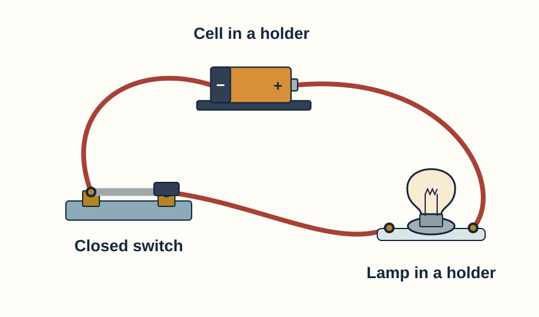
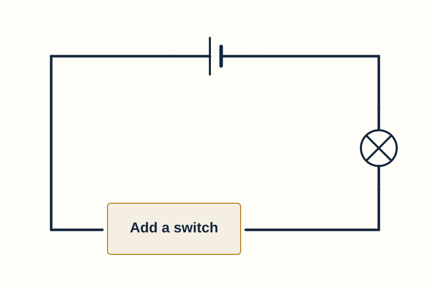

Year 7 · Current electricity · Help for everyone
Build your circuit drawings
Choose symbols, complete connections and draw your own circuit.
Choose another resource
Keep this beside your lesson. Write and draw in your book or on a printed copy. You can explain aloud or direct a scribe. This page does not save answers.
Choose the starting point that helps you. Connections and correct symbols matter more than neat handwriting. You may use large paper, a ruler, the symbol composer or a scribe whom you direct.
1 · Look from equipment to symbols


Your turn
Find the cell, switch and lamp in both pictures. Explain one difference in appearance that does not change the circuit.
Say your answer, point and explain, or write in your book.
Model answer & success criteria
The cell becomes long and short lines; the lamp becomes a circle with a cross; the closed switch becomes touching contacts. Curved equipment leads can be shown as straight diagram wires without changing their connections.
Success: Match all three components; describe a visual change while keeping the same terminal connections.
2 · Complete one missing part

On paper, copy or trace the frame. Add a closed switch to complete the path. Label it.
Add the missing switch, or print and draw on the diagram above.
Model answer & success criteria
Add two switch contacts joined by a line. Join each outer end to the corresponding wire end. No gap should remain in the intended loop.
Success: Correct closed-switch symbol; both connections joined; label included.
Show the completed drawing
3 · Change one feature

Copy this circuit using symbols. Put an ammeter into a wire in the same loop. Label it A. Do not leave a wire bypass around it.
Draw your two-lamp series circuit and ammeter.
Model answer & success criteria
Put a circle containing A into any wire segment of the single loop and connect both ends. All current through the lamps must pass through A. Component order can vary.
Success: Two lamps and the source in one complete loop; A in series; no bypass. Any electrically equivalent drawing is acceptable.
Need a meter example?

4 · Plan the connections yourself
Draw one battery and two lamps in parallel. Add a switch in each lamp’s branch. Show junctions clearly. Explain how one lamp could stay on while the other is off.
Choose symbols. Make two branches. Place switches. Trace and explain.
Model answer & success criteria
Connect two branches between the same supply junctions. Each branch must contain its own lamp and switch in series. Closing one branch switch and opening the other gives one lamp on and one off.
Success: Two complete potential routes through the source; one lamp and switch per branch; clear junctions; an explanation of independent control.
Show one possible drawing

5 · Show voltage measurement
On your parallel drawing, add a voltmeter across one lamp. Leave that lamp’s own path intact. Name the two points connected to V.
Add V across the two lamp terminals.
Model answer & success criteria
Add a circle containing V, connected by one lead to each terminal of the chosen lamp. Do not place V in the lamp’s series path. If the branch also contains a switch, place the probes directly across the lamp, not across the whole lamp-and-switch branch.
Success: Correct V symbol; both lamp terminals identified; no broken lamp path.
Check the two connections

Check your drawing
- I used recognisable scientific symbols.
- My wires join the intended terminals.
- My junctions are clear; crossings do not accidentally imply a connection.
- My switch is open or closed as the task requires.
- A is in the path; V is across two points.
- I can explain a complete route using my drawing.